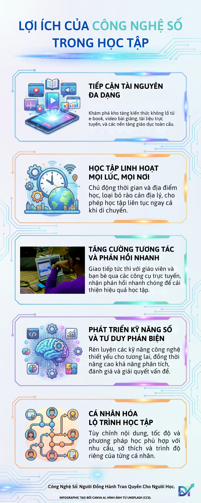

Infographic: Công nghệ số đồng hành cùng người học

Video YouTube - Nhiệm vụ 2.2
Video minh họa cho bài tập Nhiệm vụ 2.2. Nhấn nút phát để xem nội dung trực tiếp từ YouTube. Mở video trực tiếp trên YouTube
Công nghệ số mở rộng cơ hội tiếp cận tri thức, giúp việc học trở nên linh hoạt, tương tác và phù hợp hơn với nhu cầu của mỗi người.

Video minh họa cho bài tập Nhiệm vụ 2.2. Nhấn nút phát để xem nội dung trực tiếp từ YouTube. Mở video trực tiếp trên YouTube